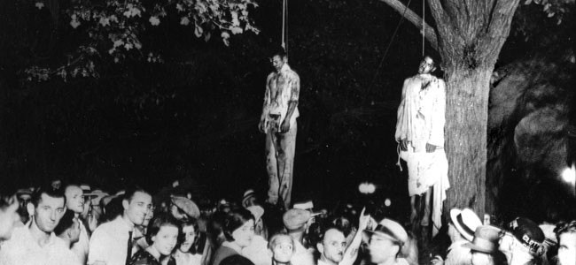
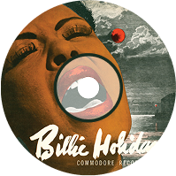
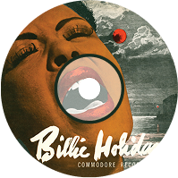

1939, America
Billie Holiday는 재즈 역사상 가장 고통스럽고도 깊은 목소리를 지닌 인물이다.
1915년, 슬럼가에서 태어난 그녀는 태어날 당시 아버지가 17세, 어머니가 19세였으며,어머니는
거리의 성매매 종사자였다. 그녀 역시 열 살이 되기도 전에 인종과 성별의 이중 차별 속에서 고통받으며,
어린 나이에 창부의 삶을 살아야 했다. 빌리는 두 번의 성폭행을 당했으며, 그 중 한 번은 10살 때
백인 남성에게서였지만 오히려 그녀가 불량소녀로 몰려 감호소에 수감되는 현실을 마주했다. 어린
시절의 학대, 극빈, 그리고 불의한 사회적 처우 속에서 그녀는 매춘과 감옥 생활을 반복하며
살아남았다. 그 와중에도 그녀의 목소리는 스스로의 삶을 증언하는 무기가 되었다.
클럽에서 춤 오디션에 떨어진 어느 날, 우연히 부른 노래 하나로 모든 것이 달라졌다. 그녀가
노래를 부르자 홀 전체가 숨을 죽였고, 그 순간부터 ‘빌리 홀리데이’는 무대 위에서만큼은 누구보다 우아하고
품격 있는 존재가 되었다. ‘Lady Day’라는 별명은 무대에서 치자꽃을 머리에 꽂고 노래하던 그녀의 상징이었다.
하지만 그녀의 삶은 결코 평탄하지 않았다. 세 번의 결혼은 모두 실패로 끝났고, 마약과 알코올 중독은
그녀의 정신과 육체를 갈아먹었다. 듀크 엘링턴, 마일스 데이비스 같은 전설들이 그녀를 도왔지만,
인종차별과 사회적 낙인은 그녀를 끝내 벗어나지 못하게 했다. 마약 중독 말기로 병원에 실려 갔을 때
아무도 그녀를 알아보지 못할 정도였고, 진료 기록에는 “치료 방법 없음”이라 적혀 있었다.
그녀의 대표곡인 ‘Strange Fruit’은 이러한 생의 응축된 분노와 비통함을 담은 노래였다.
흑인을 린치하는 장면을 은유적으로 표현한 이 곡은, 백인 중심의 미국 사회에서 금기시되었고,
그녀는 FBI의 감시 속에서도 이 노래를 부르는 것을 멈추지 않았다.
그녀에게 ‘Strange Fruit’은 단지 노래가 아니라 저항이고, 증언이었다.
오늘날까지도 많은 사람들은 그녀의 망가진 목소리 속에서 오히려 더 진한 감정을 느낀다. 그녀의
노래는 단순한 음악이 아닌, 한 사람의 삶과 그 시대의 기록이며, 죽음을 견딘 목소리였다.
그녀는 무대 위에서는 레이디였지만, 무대 밖에서는 처절히 버림받은 사람이었다.
그런 그녀가 죽었을 때, 지인들은 이렇게 말했다.
“이제야 그녀가 진짜로 행복해졌을지도 몰라.”
이 곡의 제목인 Strange Fruit(기이한 열매)는 섬뜩하게도 남부의 포플러 나무에
목이 매달린 흑인의 시신을 은유하는 표현이다. 당시 미국 남부에서는 인종차별이 극에 달해,흑인들이 백인에게
린치를 당하고 나무에 매달리는 일이 빈번했다. 이 곡은 그 잔혹한 현실을 은유적이고 시적으로 고발한 노래다.
곡의 가사를 쓴 이는 뉴욕 출신 백인 시인 Abel Meeropol로, 루이스 앨런(Lewis Allan)이라는
필명으로 이 시를 발표했다. 그는 한 장의 린치 사진에서 충격을 받아 이 시를 썼고,후에 곡을
붙여 아내와 흑인 가수 로러 던컨과 함께 메디슨 스퀘어 가든에서 초연했다.
그러나 이 곡이 진정으로 세계에 울려 퍼진 계기는 Billie Holiday의 목소리를 통해서였다. Billie는
1939년, 흑인이라는 이유로 적절한 치료를 받지 못한 채 폐렴으로 사망한 아버지의 죽음을 계기로 이 곡을
부르기로 결심했다. 그녀에게 이 노래는 단순한 발언이 아닌, 존재 자체의 저항이자 분노의 표현이었다.
곡은 발표 직후부터 극심한 논란에 휘말렸다. 대부분의 라디오 방송국은 이 곡을 금지곡으로 지정했고,
Billie Holiday는 FBI의 감시 대상이 되었다. 공연장에서조차 이 곡을 부르지 못하게 압박받았고,그녀는
이 노래를 부를 때 조명을 모두 끄고 단 하나의 스포트라이트 아래에서 노래를 부른 뒤 바로 무대에서 내려갔다.
‘Strange Fruit’는 단지 그냥 하나의 노래 아닌, 한 시대를 고발하는 선언문이었다.
이 곡이 검열된 이유는 단지 표현이 거칠어서가 아니라,
너무나도 정확하게 미국 사회의 부끄러운 얼굴을 찔렀기 때문이었다.

Southern trees bear a strange fruit
남부의 나무엔 이상한 열매가 맺히지요
Blood on the leaves and blood at the root
잎에도 뿌리에도 온통 피범벅
Black body swinging in the Southern breeze
검은 몸뚱이가 남부의 산들바람에 흔들리죠
Strange fruit hanging from the poplar trees
포플러 나무에 이상한 열매가 맺혔답니다
Pastoral scene of the gallant South
용맹의 고장, 남부의 목가적인 풍경 아래
The bulging eyes and the twisted mouth
튀어나온 눈과 비틀어진 입술
Scent of magnolia sweet and fresh
달콤하고 신선한 목련꽃의 냄새와
And the sudden smell of burning flesh
불타버린 살점의 냄새까지
Here is a fruit for the crows to pluck
까마귀가 파먹는 열매가 맺혔어요
For the rain to gather, for the wind to suck
비에 맞고 바람에 시들리며
For the sun to rot, for a tree to drop
햇볕에 썩어서 결국 나무에서 떨어져 버리는
Here is a strange and bitter crop
참으로 이상하고 씁쓸한 과실이랍니다
 
